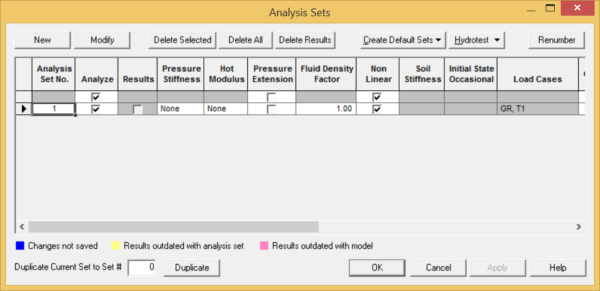
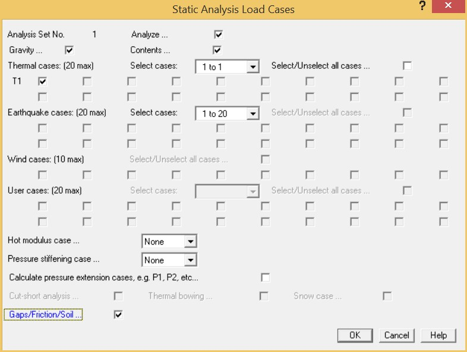
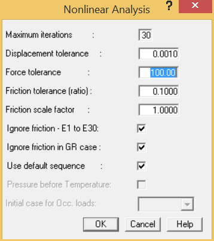

To Define a Static Analysis
1. Select Analysis > Setup > Static Analysis Sets to display the following dialog.

- Select Analysis Set No. 1 and click Modify to display the following dialog.

- Enable the Gravity and Thermal Cases T1 options to check for these loads.
- Since we have defined gaps and friction on the guide supports that connect to the frames, we will need to enable Gaps/Friction/Soil field. By enabling this field, AutoPIPE considers these non- linear boundary conditions during the static analysis.
| Hint: |
To perform a non-linear analysis, you must always enable the Gaps/Friction/Soil option in the Static Load Cases dialog as described above. |
- Press OK to accept the remaining defaults and close the Static Load Cases dialog.
- Since you enabled Gaps/Friction/Soil, AutoPIPE displays the Non-linear Analysis dialog to allow customization of how the non-linear analysis is performed. Customization is only required if convergence problems occur during the analysis or a special load sequence is required.

- Make sure the Force tolerance field is set to 100.00 {444.82}.
- Accept the remaining default values as shown and click OK.
- Press OK to close the Analysis Sets dialog.
| Note: |
You will be prompted with a dialog asking if you want to analyze the model. Click Cancel as you will perform a Static Analysis in the next exercise. |